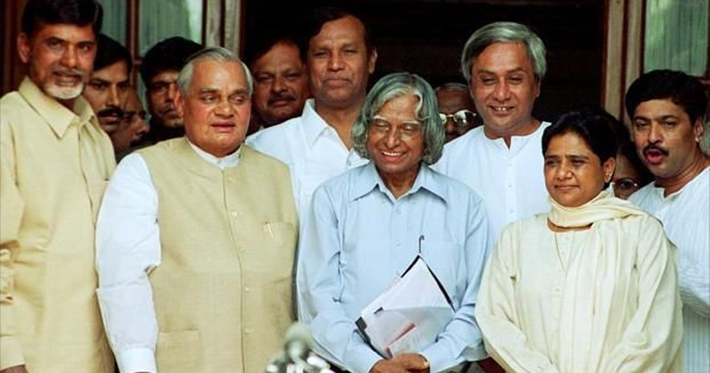

The Man was an Indian aerospace scientist and politician who served as the 11th President of India from 2002 to 2007

Dr.APJ Abdul Kalam,Second from the from left,Presidential election candidate meeting.
Here's a APJ journery from 1931-2015
1931 - Avul Pakir Jainulabdeen Abdul Kalam was born in Tamil Muslim family in the pilgrimage centre of Rameswaram on Pamban Island.
1960 - Kalam joined the Aeronautical Development Establishment of the Defence Research and Development Organisation as a scientist after becoming a member of the Defence Research & Development Service (DRDS).
1963 - he visited NASA's Langley Research Center in Hampton, Virginia; Goddard Space Flight Center in Greenbelt, Maryland; and Wallops Flight Facility
1965 - Kalam had first started work on an expandable rocket project independently at DRDO
1969 - Kalam was transferred to the Indian Space Research Organisation (ISRO) where he was the project director of India's first Satellite Launch Vehicle (SLV-III)
1970 - Kalam also directed two projects, Project Devil and Project Valiant, which sought to develop ballistic missiles from the technology of the successful SLV programme
1980 - He was successfully deployed the Rohini satellite in near-earth orbit
1992 - 1999 - Kalam served as the Chief Scientific Adviser to the Prime Minister and Secretary of the Defence Research and Development Organisation
2002 - Kalam served as the 11th President of India, succeeding K. R. Narayanan. He won presidential election with an electoral vote of 922,884, surpassing the 107,366 votes won by Lakshmi Sahgal.
2012 - Kalam declined to contest the presidential poll.
2015 - Kalam was dead a sudden cardiac arrest.
If you want read more interesting topic about this incrediable person
Wikipedia Link